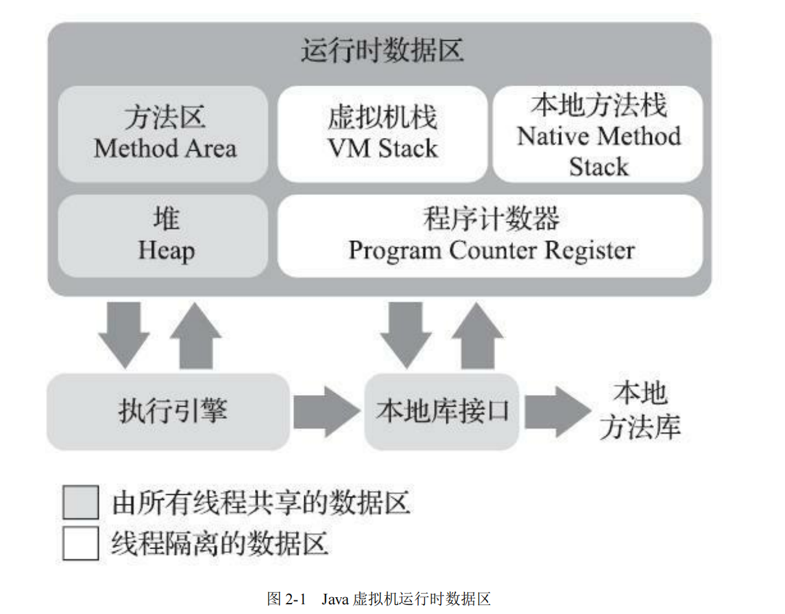
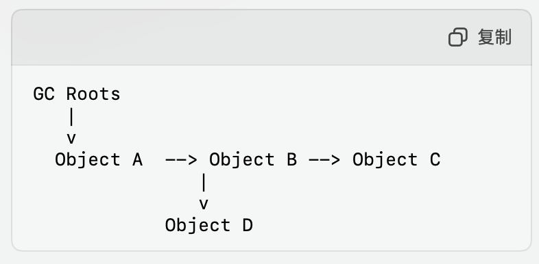

内存与垃圾回收
GC Introduce
首先是 JVM 中的内存分布区域与 GC 关系最为紧密的部分是 堆 和 方法区

触发GC的条件是什么
- 内存不足时 JVM检测到堆内存不足的时候，就会自动触发GC
- 手动请求，可以利用
System.gc()或者Runtime.getRuntime().gc()进行建议 JVM 进行垃圾回收 -> 是建议并不会立即执行 - JVM 参数的设置
- 对象数量或者内存占用达到阈值的时候
JVM中的内存组成
JVM 中的堆
- 主要的储存对象 : 对象实例 和 数组 （所有动态内存分配等对象都是储存在堆中）
-
是 GC管理的主要区域，几乎所有的Java对象都在这里分配内存
- 分成 新生代 和 老生代
JVM 中的方法区
- 用于储存 类信息、常量、静态变量、即时编译器编译后的代码等数据
在 HotSpot 虚拟机中对应的是元空间,元空间也受到GC管理，但是回收频率和方式与堆不同
JVM 中的栈
- 是每个线程独有的，存放局部变量表、操作数栈、动态链接等信息
- 不属于 GC 管理的主要部分，因为栈帧随方法的进入和退出自动清理
PC
与GC无关 每个线程中都有一个 PC 寄存器，用来储存线程所执行的字节码的行号指示器
我们看上图，可以发现的是 堆 和 方法区 两个都是所有线程共享的，而 栈 和 PC 是每个线程独有的。
GC 的基本原理
因为Java的JVMGC是自动进行垃圾回收的，那么很自然的一个想法就是，我们如何知道一个对象是不是垃圾呢？那么接下来就是介绍一下 GC是如何判定对象是否存活
对象是否存活的判定
1. 引用计数法
我们给每个对象添加一个引用计数器，用来统计这个对象被引用的次数。当引用次数为 0 的时候，就进行回收。看起来是一种比较理想的办法，但是有一种特殊情况是 循环引用，这种情况下，两个对象互相引用，但是引用次数都不为 0，这样就会导致内存泄漏。
下面就是一个例子:
1 2 3 4 5 6 7 8 9 10 11 12 13 14 15 16 17 18 19 20 21 22 23 24 25 | |
A 和 B 互相持有了两个对象的引用。但是没有别的地方引用，它们的引用计数一直是 1，就导致系统无法判断两个对象是否应该被回收，从而造成了内存泄漏。
可达性分析法
可达性分析法是 Java 垃圾回收机制中用来判断哪些对象是可回收的一个重要的算法，它是现代垃圾回收器中使用的主要垃圾回收算法之一。
其实这个思路很简单，算法的本质就是建立有向图，从 GC Roots 开始，遍历所有的对象，如果一个对象没有被任何引用指向，那么这个对象就是垃圾对象。这个算法就是 可达性分析法。接下来我们进行具体的介绍。
- 建立有向图
- 从 GC Roots 对象开始 BFS / DFS 遍历
- 垃圾回收
可达性分析的具体过程如下:
-
Step1 : 确定 GC Roots
GC Roots 主要包括:
- 栈中的局部变量 正在执行的线程中的栈帧的局部变量和方法参数
- 静态字段 : 类加载器的类的静态字段的引用对象
- JNI 引用 : 由本地代码创建的引用，指的是 Java 与其他语言的交互机制，允许在 Java 代码中调用本地方法 (主要是防止如果本地代码通过JNI持有了Java对象，但是 JNI 本身并没有直接参与JVM的垃圾回收机制，那么这部分引用可能会导致GC无法正确识别这些对象是否仍然被使用)
- 活跃的线程 : 仍然存活的线程
-
Step2 : 遍历对象图
从 GC Roots 开始遍历图，逐个标记所有可达到的对象。在这个过程中，我们会把所有的对象都标记为 可达对象，而没有被标记的对象就是 垃圾对象。
-
如何判定一个对象是否可达？
引用链: 通过对对象引用链的分析，检查该对象是否能够通过一系列引用路径被 GC ROOTs 访问到。
根对象: 所有可达对象都可以追溯到 GC Roots，如果一个对象不能被 GC Roots 访问到，那么它就是不可达的。其实两个是一样的意思。
-
-
Step3 : 垃圾回收
在标记完成之后，我们就可以进行垃圾回收了。我们会把所有的 垃圾对象 进行回收，释放内存空间。

上面就是一个可达性图分析的例子，我们很自然的可以看到，上面的引用计数法中提到的 循环引用 的反例就会被有向图给识别出来，因为没有别的对象对它俩进行引用。属于是不可达的，因此我们可以把它们标记为垃圾对象。
当然，这个算法也是有优缺点的 :
- 优点 :
- 准确率高，只会标记真正不可达的对象，不会漏掉任何一个对象
- 处理复杂的引用关系, 可以避免出现的上述环形引用的问题
- 缺点 :
- 效率低，因为需要遍历所有的对象，所以时间复杂度是 O(n)
- 需要更多的内存空间，因为需要记录所有的对象的引用关系，所以需要更多的内存空间
常见的垃圾回收算法
标记-清除算法(Mark-Sweep)
- 过程 : 就像上面所说的一样，我们标记所有存活的对象 -> 清除所有未标记的对象。
- 优点: 是实现简单，标记和清除过程都是可以分离的独立过程。
- 缺点: 缺点也很明显，就是会出现比较多的内存碎片，导致内存的利用率降低，同时也会导致 GC 的效率降低。
标记-整理算法(Mark-Compact)
-
过程 : 标记所有存活的对象 -> 将所有存活的对象向一端移动 -> 清除所有未标记的对象。
-
优点 : 其实也就是把存活的对象都移动到堆的另一端，从而释放掉对象之间的空闲内存。我们可以通过这种方式，避免了上面的标记-清除算法中出现的可能过多的内存碎片的问题。
-
缺点 : 需要额外的对象移动开销。就是一个 trade-off 的问题。
复制算法(Copying)
- 过程 : 我们把内存分成大小相等的两块，只使用其中的一块，回收时候，将存活的对象复制到另一块中，然后清除掉原来的内存块。
- 优点 : 没有内存碎片，分配效率高
- 缺点 : 缺点也很明显，可用的内存减半，同时大量的内存copy开销
分代收集算法
主要的思想其实很简单，就是一生一策。根据对象存活时间不同的特点，分成 新生代 和 老生代
- 新生代 就是那些存活率比较低的对象，不会长时间存活的
- 老生代 存放长期存活对象，存活率比较高
那么对于不同的生代，我们就可以选用不同的回收算法来进行处理。
-
新生代 : 一般使用 复制算法，因为新生代的对象存活率比较低，所以我们可以通过复制算法来进行回收，同时也可以避免内存碎片的问题。
-
老生代 : 一般使用 标记-整理算法，因为老生代的对象存活率比较高，所以我们可以通过标记-整理算法来进行回收，同时也可以避免内存碎片的问题。